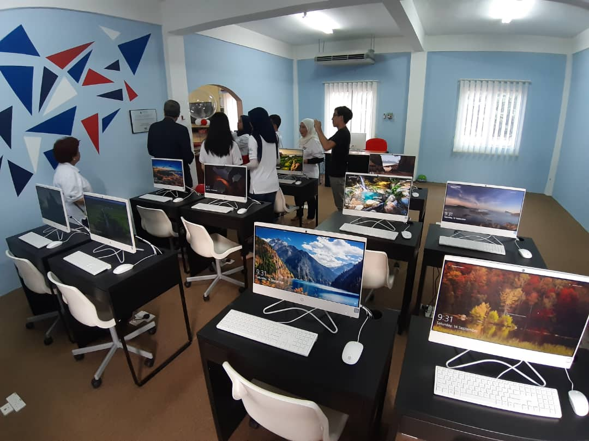

Any donations can be sent to: MANAGEMENT OF ORPHANS
ROS:PPM-001-10-17092003
Aside from financial assistance ... we are here to help you to help us. We will list the current equipment, goods or needs we need to manage the daily needs of orphans here.
1) Kitchen necessities such as dried chilies, cooking oil, sauce, soy sauce, anchovies, bunjut soup, onions, potatoes, spices and etc.
2) Raw items such as fish, chicken, vegetables, beans and fruits.
3) Washing tools such as laundry soap, bath, shampoo, floor soap, dish soap, black trash bags, shovels, brooms, toilet brushes, coir brushes, dishwashing sponges, etc.
4) Personal grooming equipment such as deodorant, hair oil, comb, face wash (secondary school), hairpins and others.
5) Other requirements that are deemed suitable for ADK children.
ADK Facilities
